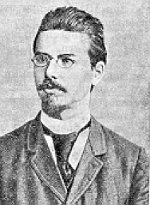

오스트리아 식물학자 프리드리히 리차드 라이니처가 1888년 식물의 콜레스테롤 성분을 분석하다 '벤조산콜레스테롤'이라는 신기한 물질을 발견한다
이 물질은 145℃로 가열하면 불투명해졌다가 179℃에 이르면 다시 투명한 액체가 되었다.
라이니처는 이 물질에 대해 더 알아보기 위해 독일 물리학자 오토 레만에게 편지로 시료를 보냈다.
이후 레만이 1904년 논문을 통해 최초로 '액정'이라는 명칭을 쇄하였다. 하지만 이 물질을 활용하지 못하고 1920년까지 연구에만 머물러 250종 이상의 액성물질이 발견된 채 방치되었다.
